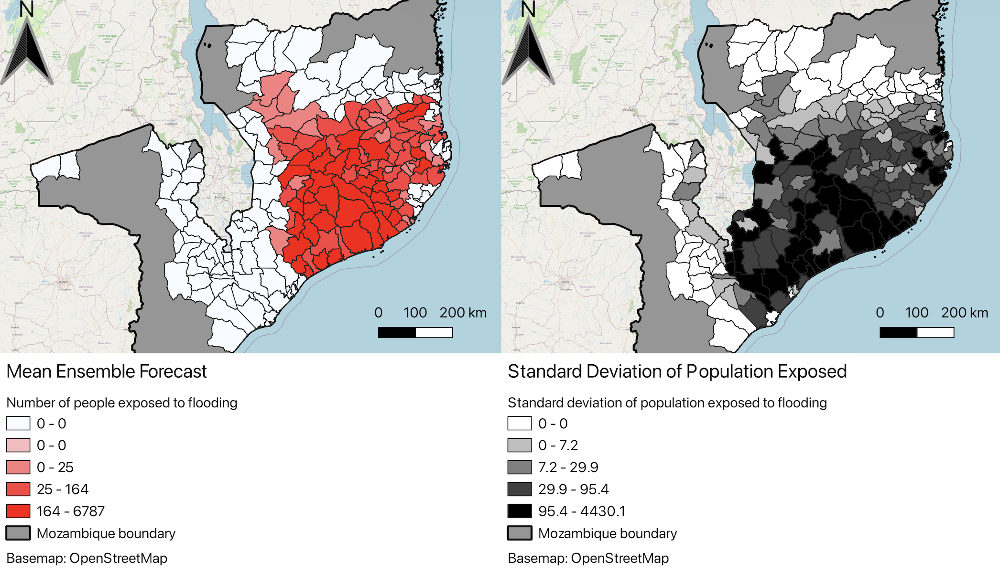

Flood Exposure & Risk Mapping: Tropical Cyclone Freddy (Mozambique)
Simulated emergency forecasting bulletin and impact assessment | University of Bristol
Summary
In February and March 2023, Tropical Cyclone Freddy made an unprecedented secondary landfall in Mozambique, causing severe flooding across major river basins. As part of a BSc summative assessment in Environmental Risks and Disaster Risk Reduction (GEOG30041), this project simulated a rapid response emergency workflow designed to inform FCDO humanitarian planners. The task involved processing 51 probabilistic GloFAS ensemble members, zonal statistics in QGIS, and compiling a concise 3 page briefing on district level population and infrastructure exposure.
Assessment Research Questions
- What is the spatial extent and district level population exposure forecast across Mozambique during Cyclone Freddy's second landfall?
- How does probabilistic uncertainty across 51 GloFAS ensemble members impact risk estimation for critical infrastructure (road and rail networks)?
- What actionable recommendations can be communicated to emergency decision makers to prioritise disaster risk reduction and humanitarian aid deployment?
Methodology
- Ensemble Forecast Parsing: Processed 51 probabilistic ensemble members from the Global Flood Awareness System (GloFAS) using R to evaluate flood inundation thresholds and statistical confidence bounds (mean vs. 90th percentile).
- GIS Spatial Zonal Statistics: Applied spatial overlays and zonal statistics in QGIS against WorldPop high resolution population rasters and administrative boundaries (GADM) to quantify district level exposure.
- Critical Infrastructure Exposure Analysis: Overlayed flood extent polygons with OpenStreetMap transportation layers to identify vulnerable primary road corridors and key railway links.
- Academic Briefing Synthesis: Synthesised complex hydrometeorological modeling outputs into a succinct 3 page emergency bulletin tailored for operational disaster response communication.
Key Findings & Outputs

Population Exposure
Up to 478,482 people were projected to be exposed to flooding across 123 districts under the 90th percentile.
Highest Risk Districts
Marromeu District was identified as the highest risk region, with mean estimated exposure of 44,785 people (increasing to 79,549 at the 90th percentile).
Infrastructure Disruption
Severe vulnerability was mapped along key transit lines, highlighting high risk of isolated communities due to road inundation and rail line washouts.
Forecasting Uncertainty
Highlighted the critical divergence between ensemble mean and 90th percentile bounds to prevent under preparedness in simulated emergency aid allocation.
View Full Emergency Bulletin Assessment
Access the complete 3-page emergency briefing PDF produced for a BSc assessment simulating FCDO decision support reporting.
Technical Competencies
QGIS Zonal Statistics GloFAS Ensemble Data Analysis (R) Flood Risk & Vulnerability Mapping Disaster Risk Governance Emergency Bulletin Reporting